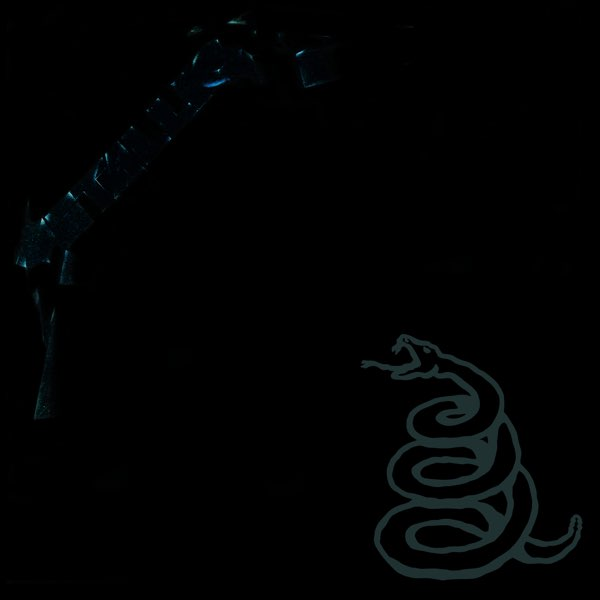
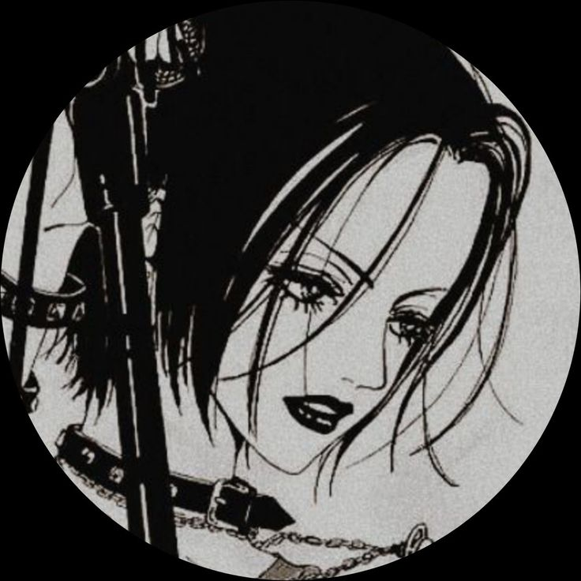

Music is your only friend until the end
Music is your only friend until the end
Titlul de tip h3
Music
| Brand | Model | Culoare | An | Parcurs |
|---|---|---|---|---|
| Audi | OS | Alb | 2018 | 8310KM |
| BMW | M4 Competition | Army Green | 2021 | 58KM |
| Skoda | Octavia | Black | 2010 | 256701km |

Html
Css
The series is centered on Nana Osaki and Nana Komatsu, two women who move to Tokyo at the age of 20, with the story focused on Nana O.'s pursuit for fame and Nana K.'s pursuit for romance, all while struggling to maintain their friendship.
The series is centered on Nana Osaki and Nana Komatsu, two women who move to Tokyo at the age of 20, with the story focused on Nana O.'s pursuit for fame and Nana K.'s pursuit for romance, all while struggling to maintain their friendship.
The series is centered on Nana Osaki and Nana Komatsu, two women who move to Tokyo at the age of 20, with the story focused on Nana O.'s pursuit for fame and Nana K.'s pursuit for romance, all while struggling to maintain their friendship.
The story of Attack on Titan centers on a civilization inside three circular walls. According to the knowledge propagated locally, it is the last surviving vestige of human civilization. Its inhabitants, known as Eldians, have been led to believe that over one hundred years ago, humanity was driven to the brink of extinction after the emergence of humanoid giants called Titans, who attack and eat humans on sight. The last remnants of humanity retreated behind three concentric walls and enjoyed roughly a century of peace. Within the walls, the thought of venturing outside is strongly frowned upon and discouraged. To combat Titans, the country's military employs Vertical Maneuvering Equipment (VME), also called Omni-Directional Maneuvering Gear (ODM Gear): a set of waist-mounted grappling hooks and gas-powered propulsion enabling immense mobility in three dimensions. Swords made of ultrahard steel are used in conjunction with the gear, and eventually rocket launcher-like weapons called Thunder Spears are also developed. There exist different types of Titans. Pure Titans are the weakest and most generic Titans, whose behavior is easy to predict, making them easy to kill. Abnormal Titans are Pure Titans whose behavior is more difficult to predict, making them far more dangerous. The Nine Titans, also known as Titan Shifters (Attack, Colossal, Armored, Female, Beast, Jaw, Cart, War Hammer, and Founding), are the strongest Titans; each is able to shift back and forth between human and Titan form to access their Titan's abilities. Many Titan Shifters also possess the ability to harden certain parts of their bodies at will, typically in order to make them virtually impenetrable, or to strengthen their blows during combat. Pure Titans are created by injecting Eldians with Pure Titan spinal fluid. If a Pure Titan eats the human body of a person who possesses one of the Nine Titans, said Eldian will revert to human form and gain that Shifter's powers, whereupon they are cursed to live only 13 more years. If their powers are not inherited by another Eldian before their death, their powers will be inherited by an Eldian baby born shortly thereafter, regardless of distance or blood-relations. As the story progresses, the true nature of the Titans and the existence of civilization outside the walls is revealed to the characters and the audience.
In Jujutsu Kaisen, all living beings emanate energy called Cursed Energy, which arises from negative emotions that naturally flow throughout the body. Ordinary people cannot control this flow in their bodies. As a result, they continually lose Cursed Energy, resulting in the birth of Curses, a race of spiritual beings whose primary desire is to bring harm to humanity. These curses are shown as gruesome monsters. Jujutsu Sorcerers are people who control the flow of Cursed Energy in their bodies, allowing them to use it as they please and also to reduce its release. High-ranking Sorcerers and Curses can refine this energy and use it to perform Cursed Techniques, which tend to be unique to the user or their family. An advanced form of Cursed Technique is Domain Expansion, which the users build a pocket dimension of variable size. Inside the domain, all of their attacks will always connect and grow in strength.
In the late 19th century, the British Empire has become a global power. Due to the strict class stratification, the average citizen has little chance of successfully rising up to the top, where the despicable nobility rules over them all. After Albert Moriarty's family adopts two orphans, William James and Louis James, he learns that they share a common hatred for the corrupt British nobility with William James calling himself a "crime consultant". They scheme together to kill Albert's cruel blood related brother, also named William, burn down the family estate, and then start a new life together aimed at using illegal means to destroy the class system which had plagued the country for centuries. While enacting an elaborate scheme to murder a noble who was hunting commoners, William James Moriarty encounters Sherlock, who is able to deduce a third party was involved in the murder. This piques Moriarty's interest in Sherlock and leads him to frame Sherlock for murdering a count to test his abilities.
Constantine is a 2005 American superhero horror film directed by Francis Lawrence in his directorial debut. Written by Kevin Brodbin and Frank Cappello, it is loosely based on DC Comics' Hellblazer comic book. The film stars Keanu Reeves as John Constantine, a cynical exorcist with the ability to perceive and communicate with half-angels and half-demons in their true forms and to travel between Earth and Hell. Rachel Weisz, Shia LaBeouf, Tilda Swinton, Pruitt Taylor Vince, Djimon Hounsou, Gavin Rossdale, and Peter Stormare also feature.
Keanu Reeves as John Constantine, a chain-smoking cynic with the ability to perceive the true visage of half-angels and half-demons on the human plane. John believes himself damned to Hell for attempting suicide—a mortal sin—and has terminal lung cancer. Connor Dylan Wryn as young John Constantine Quinn Buniel as child John Constantine
Rachel Weisz as Angela Dodson, a troubled LAPD detective investigating the suicide of her twin sister Isabel (also portrayed by Weisz) . Weisz also portrays Mammon, the son of Lucifer who has no patience for his father's rule of Hell and uses Angela's body as a means of escaping to rule over Earth.
Shia LaBeouf as Chas Kramer, Constantine's driver and apprentice. Chas has a strong interest in the occult and helps Constantine whenever possible in order to gain knowledge and experience from him.
Constantine info Constantine watch in english Constantine watch in russianThe best place to meet your friends
Winter is gradually coming into its own. In the north of the country, where the mercury in thermometers indicates -1 degree Celsius, it snowed this night.In Pepenii Noi, from Bălţi, according to the pictures posted by an internet user, the snow layer reaches several centimeters.
The iPhone 13 Pro and iPhone 13 Pro Max are smartphones designed, developed, and marketed by Apple Inc. They are the flagship smartphones in the fifteenth generation of the iPhone, succeeding the iPhone 12 Pro and iPhone 12 Pro Max respectively. The devices were unveiled alongside the iPhone 13 and iPhone 13 Mini at an Apple Special Event at Apple Park in Cupertino, California on September 14, 2021, and became available ten days later, on September 24.They were discontinued on September 7, 2022, as well as the iPhone 11 and iPhone 12 mini, following the announcement of the iPhone 14 and iPhone 14 Pro.Major upgrades over its predecessor include improved battery life, improved cameras and computational photography, rack focus for video in a new "Cinematic Mode" at 1080p 30 fps, Apple ProRes video recording, a new A15 Bionic system on a chip, and a variable 10–120 Hz display, marketed as ProMotion.

www.annaperling.md ig:annaperling.official
Shoujo is probably the last word I would use to describe this anime. NANA is possibly one of the most complicated romances I have ever come across; this complexity is what makes it so amazing, outstanding and fascinating. It is because NANA is not a typical shoujo which makes it suitable for a wider audience; it's far from your average school-life-love-triangle romance. This anime will make anyone laugh, cry and feel a connection with the protagonists by the end of 47 episodes. Story - 10/10 Can anyone have any more drama in their life than the characters from NANA? In my opinion, the summary above ...
Marlboro is an American brand of cigarettes, currently owned and manufactured by Philip Morris USA within the United States and by Philip Morris International outside the United States. The largest Marlboro cigarette manufacturing plant is located in Richmond, Virginia. Owner: Altria; Philip Morris International Produced by: Philip Morris USA (US); Philip Morris International (outside the US) Introduced: 1924; 98 years ago Parent companies: Philip Morris International, Altria, Philip Morris USA
Wikis are enabled by wiki software, otherwise known as wiki engines. A wiki engine, being a form of a content management system, differs from other web-based systems such as blog software, in that the content is created without any defined owner or leader, and wikis have little inherent structure, allowing structure to emerge according to the needs of the users.[1] Wiki engines usually allow content to be written using a simplified markup language and sometimes edited with the help of a rich-text editor.[2] There are dozens of different wiki engines in use, both standalone and part of other software, such as bug tracking systems. Some wiki engines are open-source, whereas others are proprietary. Some permit control over different functions (levels of access); for example, editing rights may permit changing, adding, or removing material. Others may permit access without enforcing access control. Other rules may be imposed to organize content. The online encyclopedia project, Wikipedia, is the most popular wiki-based website, and is one of the most widely viewed sites in the world, having been ranked in the top twenty since 2007.[3] Wikipedia is not a single wiki but rather a collection of hundreds of wikis, with each one pertaining to a specific language. In addition to Wikipedia, there are hundreds of thousands of other wikis in use, both public and private, including wikis functioning as knowledge management resources, note-taking tools, community websites, and intranets. The English-language Wikipedia has the largest collection of articles: as of February 2020, it has over 6 million articles. Ward Cunningham, the developer of the first wiki software, WikiWikiWeb, ori
"